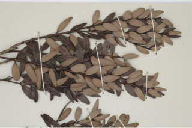
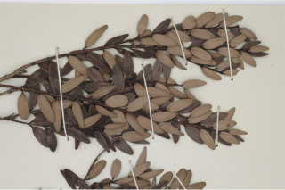

Trees up to 10 m tall.
10 ಮೀ. ಎತ್ತರದವರೆಗೆ ಬೆಳೆಯುವ ಮರಗಳು.
Trees up to 10 m tall.
மரங்கள் 10 மீ. உயரம் வரை வளரக்கூடியது.
Bark greyish brown with white patches, flaky in mature trees.
ತೊಗಟೆ ಬೂದು ಮಿಶ್ರಿತ ಕಂದು ಬಣ್ಣದಲ್ಲಿದ್ದು ಬಿಳಿ ಮಚ್ಚೆಗಳ ಸಮೇತವಿರುತ್ತದೆ ಹಾಗೂ ಬಲಿತಾಗ ಚಕ್ಕೆ ಸಮೇತವಾಗಿರುತ್ತವೆ.
Bark greyish brown with white patches, flaky in mature trees.
மரத்தின் பட்டை சாம்பல்-ப்ரவுன் நிறமானது மற்றும் வெள்ளை நிறம் கலந்தவை, முதிரும் போது செதில்களாக உதிருபவை.
Young branchlets quadrangular when young, later terete, slender, glabrous.
ಎಳೆ ಕಿರುಕೊಂಬೆಗಳು 4-ಕೋನಯುಕ್ತವಾಗಿರುತ್ತವೆ ನಂತರ ದುಂಡಾಗಿರುತ್ತವೆ ಮತ್ತು ತೆಳುವಾಗಿದ್ದು ರೋಮರಹಿತವಾಗಿರುತ್ತವೆ.
Young branchlets quadrangular when young, later terete, slender, glabrous.
இளம்பருவத்தில் சிறிய நுனிக்கிளைகள் குறுக்குவெட்டுத் தோற்றத்தில் நான்கு கோணங்களுடையது, முதிரும் போது குறுக்குவெட்டுத் தோற்றத்தில் வளையமானது, மெல்லியது, உரோமங்களற்றது.
Leaves simple, opposite, decussate; petiole 0.1 cm long, canaliculate, glabrous; lamina small, 0.6-3 x 0.2-1 cm, lanceolate, elliptic to obovate, apex obtuse, base acute - rounded, margin revolute, pellucid gland dotted, coriaceous, glabrous; midrib canaliculate; secondary_nerves and tertiary_nerves obscure.
ಎಲೆಗಳು ಸರಳವಾಗಿದ್ದು ಅಭಿಮುಖವಾಗಿ ಜೋಡನೆಗೊಂಡಿದ್ದು ಕಾಂಡದ ಎರಡೂ ಕಡೆ ಎದುರು ಬದರಿನ ಲಂಬ ಸಾಲಿನಲ್ಲಿರುತ್ತವೆ; ತೊಟ್ಟುಗಳು 0.1 ಉದ್ದಹೊಂದಿದ್ದು ಕಾಲುವೆಗೆರೆ ಸಮೇತವಿರುತ್ತವೆ ಮತ್ತುರೋಮರಹಿತವಾಗಿರುತ್ತವೆ;ಪತ್ರಗಳು ಸಣ್ಣದಾಗಿರುತ್ತವೆ ಹಾಗೂ 0.6–3 X 0.2–1 ಸೆಂ.ಮೀ.ವರೆಗಿನ ಗಾತ್ರವಿದ್ದು ಭರ್ಜಿ,ಅಂಡವೃತ್ತದಿಂದ ಬುಗುರಿಯವರೆಗಿನ ಆಕಾರ ಚೂಪಲ್ಲದ ತುದಿ,ಚೂಪಾದ– ದುಂಡಾದ ಬುಡ, ಹಿಂಸುರುಳಿಗೊಂಡ ಅಂಚು,ಪ್ರಕಾಶ ಭೇಧ್ಯ ರಸಗ್ರಂಥಿ ಚುಕ್ಕೆಗಳ ಸಮೇತವಿದ್ದು ತೊಗಲನ್ನೋಲುವ ಮೇಲ್ಮೈ ಹೊಂದಿದ್ದು ರೋಮರಹಿತವಾಗಿರುತ್ತವೆ; ಮಧ್ಯನಾಳ ಕಾಲುವೆಗೆರೆ ಸಮೇತವಿರುತ್ತದೆ; ಎರಡನೇ ಮತ್ತು ಮೂರನೇ ದರ್ಜೆಯ ನಾಳಗಳುಅಸ್ಪಷ್ಟ.
Leaves simple, opposite, decussate; petiole 0.1 cm long, canaliculate, glabrous; lamina small, 0.6-3 x 0.2-1 cm, lanceolate, elliptic to obovate, apex obtuse, base acute - rounded, margin revolute, pellucid gland dotted, coriaceous, glabrous; midrib canaliculate; secondary_nerves and tertiary_nerves obscure.
இலைகள் தனித்தவை, எதிரடுக்கமானவை, குறுக்குமறுக்கானவை; இலைக்காம்பு 0.1 செ.மீ. நீளமானது, குறுக்குவெட்டுத் தோற்றத்தில் கேனாலிகுலேட், உரோமங்களற்றது; இலை அலகு சிறியவை, 0.6-3 X 0.2-1 செ.மீ., ஈட்டி வடிவானது, நீள்வட்ட வடிவானது முதல் தலைகீழ் முட்டை வடிவானது, அலகின் நுனி மெட்டையானது, அலகின் தளம் கூரியது-வட்டமானது, அலகின் விளிம்பு பின்புறம் வளைந்து (ரெவலுட்) காணப்படும், ஒளிபுகும் சுரப்பி புள்ளிகளுடையது, கோரியேசியஸ், உரோமங்களற்றது; மையநரம்பு மேற்புறத்தில் அலகின் பரப்பைவிட பள்ளமானது; இரண்டாம் நிலை நரம்புகள் மற்றும் மூன்றாம் நிலை நரம்புகள் கண்களுக்கு புலப்படாது.
Inflorescence terminal and axillary umbels, rarely solitary; flowers white; pedicel 0.2 cm long.
ಪುಷ್ಪಮಂಜರಿಗಳು ತುದಿ ಮತ್ತು ಅಕ್ಷಾಕಂಕುಳಿನಲ್ಲಿರುವ ಪೀಠಛತ್ರ ಮಾದರಿಯಲ್ಲಿರುತ್ತವೆ, ಅಪರೂಪವಾಗಿ ಒಂಟಿಯಾಗಿರುತ್ತವೆ;ಹೂಗಳು ಬಿಳಿ ಬಣ್ಣದಲ್ಲಿರುತ್ತವೆ;ಹೂ ತೊಟ್ಟುಗಳು 0.2 ಸೆಂಮೀ. ಉದ್ದವಿರುತ್ತವೆ.
Inflorescence terminal and axillary umbels, rarely solitary; flowers white; pedicel 0.2 cm long.
மஞ்சரி தண்டின் நுனியில் காணப்படும் மற்றும் இலைக்கோணங்களில் காணப்படுபவை, அம்பல் வகை மஞ்சரி, அரிதாக தனித்தவை; மலர்கள் வெள்ளை நிறமானது; மலர்காம்பு 0.2 செ.மீ. நீளமானது.
Berry 0.8×5 cm, globose to oblong, crowned by persistent calyx, purple; seed one.
ಬೆರ್ರಿ ಫಲಗಳು 0.8X5 ಸೆಂ.ಮೀ. ಉದ್ದವಿದ್ದುಗೋಳಾಕಾರದಿಂದ ಚತುರಸ್ರದ ಆಕಾರದಲ್ಲಿದ್ದು ಮುಕುಟದಲ್ಲಿ ಶಾಶ್ವತವಾಗಿ ಉಳಿಯುವ ಪುಷ್ಪಪಾತ್ರೆಯ ಸಮೇತವಿರುತ್ತವೆ ಮತ್ತು ಕೆನ್ನೀಲಿ ಬಣ್ಣ ಹೊಂದಿರುತ್ತವೆ;ಬೀಜ ಒಂದು
Berry 0.8×5 cm, globose to oblong, crowned by persistent calyx, purple; seed one.
முழுச்சதைகனி (பெர்ரி) 0.8×5 செ.மீ., கோளவடிவானது முதல் நீள்சதுர வடிவானது, நிரந்தரமான புல்லி இதழ்களுடையவை, பர்புள்; ஒரு விதையுள்ள கனி.

 
